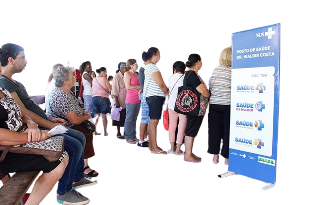
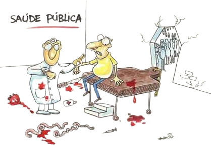

Desigualdades no acesso à saúde - Doenças crônicas - Subnutrição e obesidade - Saúde mental - Falta de infraestrutura
O acesso universal e equitativo a serviços de saúde de qualidade ainda é um sonho distante para muitos brasileiros. Fatores como renda, localização geográfica e raça/cor influenciam diretamente a qualidade do atendimento recebido
A prevalência de doenças crônicas como diabetes, hipertensão e doenças cardíacas vem crescendo de forma alarmante, exigindo medidas eficazes de prevenção e controle
A desnutrição ainda afeta milhões de brasileiros, enquanto a obesidade se torna um problema cada vez mais preocupante, especialmente entre crianças e adolescentes
A saúde mental ainda é um tema estigmatizado e com acesso limitado a serviços especializados, impactando negativamente a qualidade de vida da população
A falta de infraestrutura adequada, como hospitais, clínicas e unidades básicas de saúde, limita o acesso à saúde, especialmente em áreas rurais e remotas
